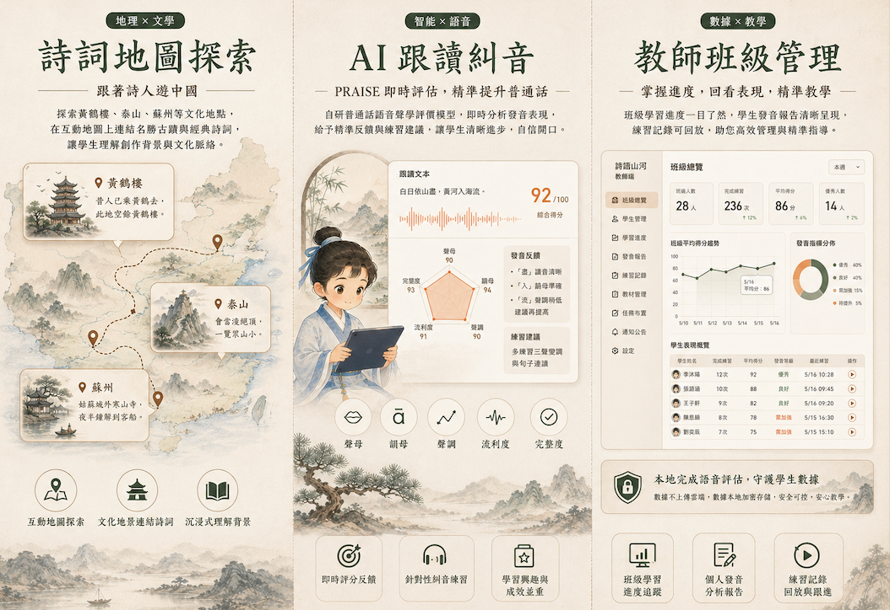
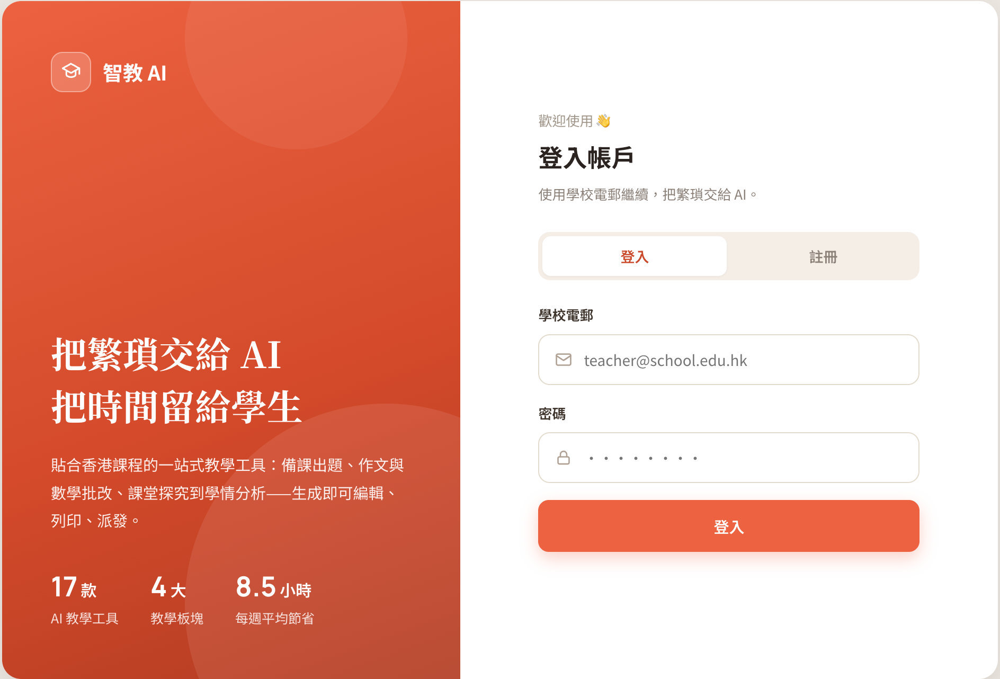
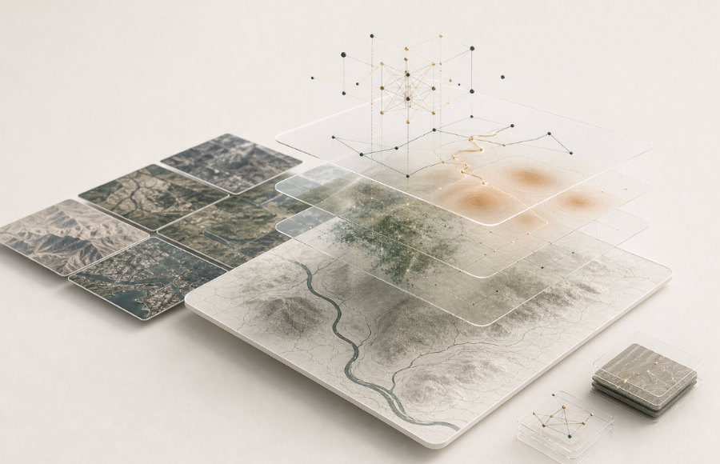

策略諮詢
釐清場景、資料與組織目標，制定能從試點走向常態化使用的 AI 導入路線。
公司簡介
About Us
我們為教育機構、政府部門、公益組織及中小型企業，提供從策略諮詢、方案設計到落地實施的一站式客製化 AI 服務。核心能力涵蓋 AI 教育培訓、多模態智能產品開發，以及將大模型技術嵌入客戶業務流程的端到端交付。
釐清場景、資料與組織目標，制定能從試點走向常態化使用的 AI 導入路線。
以多模態產品和工作流為核心，把地圖、影像、文本、語音與私有資料放入同一個業務語境。
完成模型、資料、界面與人機協同流程的端到端部署，讓 AI 真正進入日常工作。
產品方案
From classical poetry to spatial intelligence

AI Chinese Learning Platform
面向香港學校與全球中文學習者的 AI 學習平台，通過古詩詞、中國地理與朗讀練習形成學習閉環，在文化情境中提升普通話發音、詩詞理解與中華文化認知。
進入產品頁
AI Teaching Assistant · HK Curriculum
深度對應香港課程發展指引的 AI 教學輔助平台，覆蓋課前備課、課堂工作紙、形成性評估及試卷批改，協助老師把更多時間留給學生的學習成長。
了解試點合作
Conversational GIS & Remote-Sensing
地理情報智能分析智能體，面向需使用地點資料、遙感影像與現場證據的團隊。通過開放與私有數據融合、對話式 GIS 與遙感分析，完成數據匯聚、空間分析與空間決策報告。
討論應用場景核心能力
Capabilities
把地點、路徑、文化引用、地理實體與業務規則建成可用知識。
整合地圖、影像、語音、文本、私有資料和開放數據。
讓使用者用自然語言提問、檢視證據、調整分析方向。
輸出學習建議、教學資源、監測摘要、風險研判和決策報告。
公司願景
Our Vision
以真實世界空間語境為基礎，讓每一個組織都能駕馭先進 AI 技術，平等地獲取 AI 帶來的變革力量，推動一個人人皆可受益於智能化的未來。
Grounding advanced AI in real-world spatial context so every organisation can harness its transformative power equally.